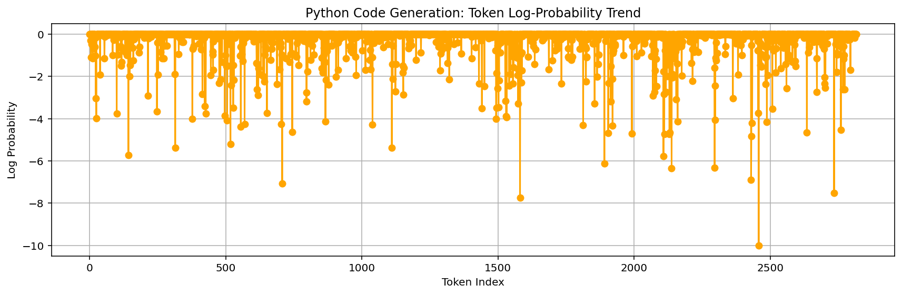
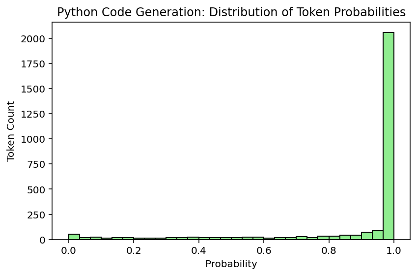
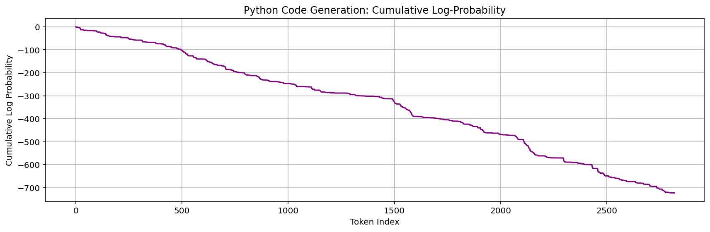
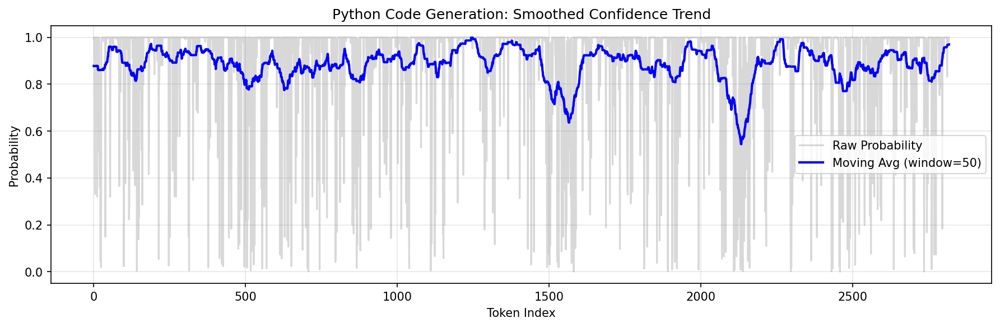
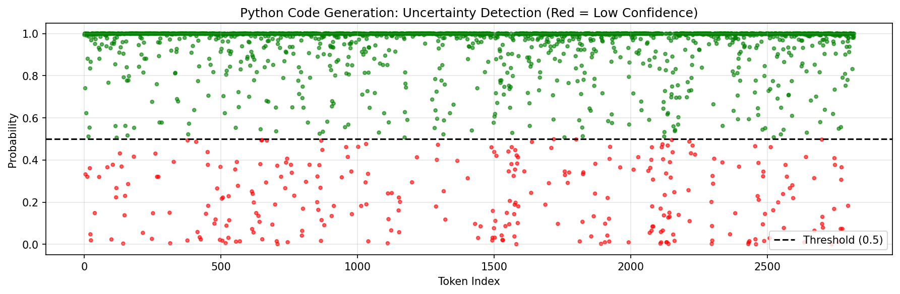
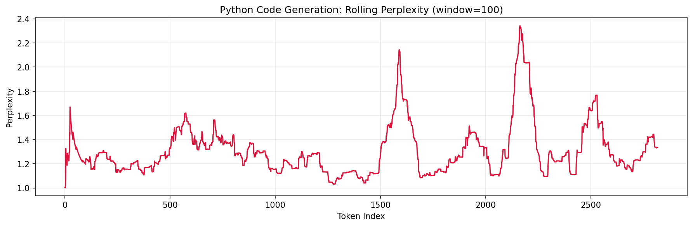
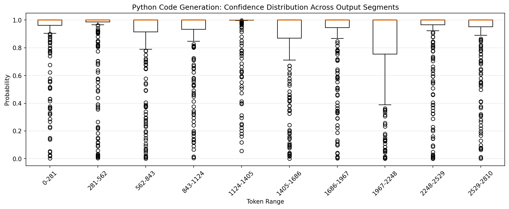
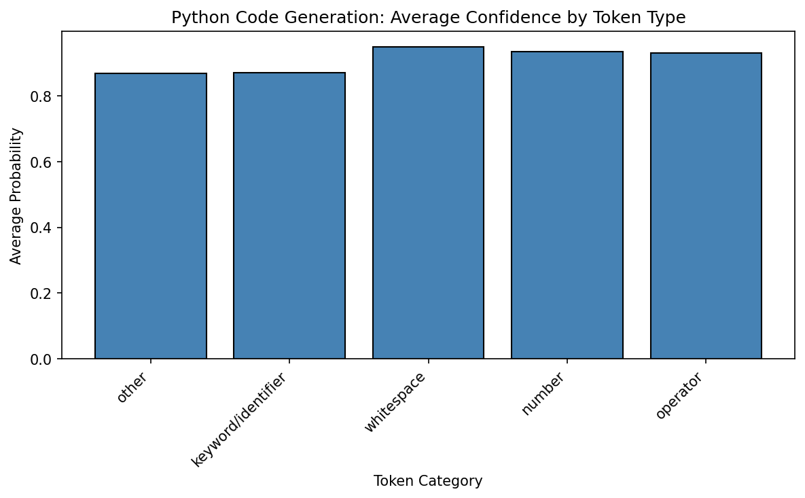
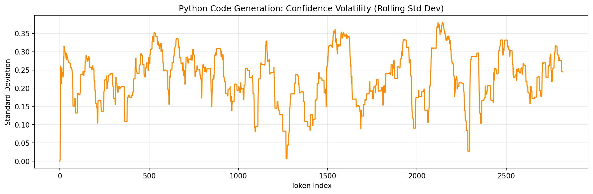
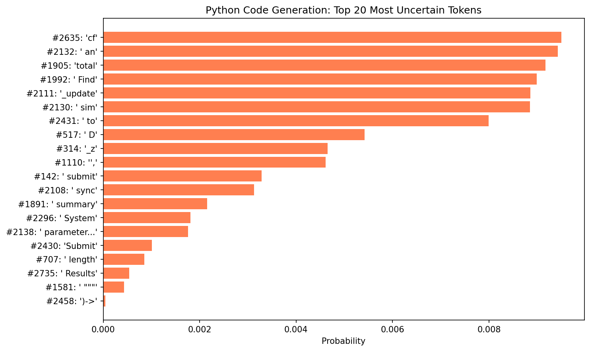

LLM Code Generation Report #12
Selected User Stories
Click to expand/collapse
Cluster (4,):
As a Data user, I want to have the 12-19-2017 deletions processed. As a UI designer, I want to redesign the Resources page, so that it matches the new Broker design styles. As a UI designer, I want to report to the Agencies about user testing, so that they are aware of their contributions to making Broker a better UX. As a DevOps engineer, I want New Relic to provide useful data across all applications. As a Broker user, I want the D1 file generation to be synced with the FPDS data load, so that I don't have to regenerate a file if no data has been updated. As a broker team member, I want to make some updates to the SQL codes for clarity. As a broker team member, I want to add the 00***** and 00FORGN PPoPCode cases to the derivation logic. As a broker team member, I want to derive FundingAgencyCode, so that the data quality and completeness improves. As a agency user, I want to map the FederalActionObligation properly to the Atom Feed. As a Broker user, I want to have PPoPZIP+4 work the same as the Legal Entity ZIP validations.
Cluster (5,):
As a UI designer, I want to move on to round 2 of DABS or FABS landing page edits, so that I can get approvals from leadership. As a UI designer, I want to move on to round 2 of Homepage edits, so that I can get approvals from leadership. As a UI designer, I want to move on to round 3 of the Help page edits, so that I can get approvals from leadership. As a Developer , I want to be able to log better, so that I can troubleshoot issues with particular submissions and functions. As a UI designer, I want to move on to round 2 of the Help page edits, so that I can get approvals from leadership. As a UI designer, I want to move on to round 2 of Homepage edits, so that I can get approvals from leadership. As a Website user, I want to access published FABS files, so that I can see the new files as they come in. As an owner, I want to be sure that USAspending only send grant records to my system. As a Broker user, I want to help create content mockups, so that I can submit my data efficiently. As a UI designer, I want to track the issues that come up in Tech Thursday, so that I know what to test and what want s to be fixed. As an Owner, I want to create a user testing summary from the UI SME, so that I can know what UI improvements we will follow through on. As a UI designer, I want to begin user testing, so that I can validate stakeholder UI improvement requests. As a UI designer, I want to schedule user testing, so that I can give the testers advanced notice to ensure buy-in. As an Owner, I want to design a schedule from the UI SME, so that I know the potential timeline of the UI improvements wanted. As an Owner, I want to design an audit from the UI SME, so that I know the potential scope of the UI improvements want ed. As an Owner, I want to reset the environment to only take Staging MAX permissions, so that I can ensure that the FABS testers no longer have access. As a Developer , I want my domain models to be indexed properly, so that I can get validation results back in a reasonable amount of time. As an Agency user, I want the header information box to show updated date AND time, so that I know when it was updated. As an owner, I only want zero-padded fields, so that I can justify padding. As a Broker user, I want to have updated error codes that accurately reflect the logic and provide enough information, so that I can fix my submission. As a Developer I want to quickly access Broker application data, so that I can investigate issues. As a FABS user, I want to have read-only access to DABS, so that I can view DABS pages without wanting two sets of permissions. As an agency user, I want a landing page to navigate to either FABS or DABS pages, so that I can access both sides of the site.
Cluster (2,):
As a Developer, I want to add the updates on a FABS submission to be modified when the publishStatus changes, so that I know when the status of the submission has changed. As a Developer, I want to add the GTAS window data to the database, so that I can ensure the site is locked down during the GTAS submission period. As a Developer , I want to update the FABS sample file to remove FundingAgencyCode after FABS is updated to no longer require the header. As a user, I want the publish button in FABS to deactivate after I click it while the derivations are happening, so that I cannot click it multiple times for the same submission. As a broker user, I want the historical FABS loader to derive fields, so that my agency codes are correct in the PublishedAwardFinancialAssistance table. As a Developer, I want the data loaded from historical FABS to include the FREC derivations, so that I can have consistent FREC data for USASpending.gov. As a FABS user, I want the frontend URLs to more accurately reflect the page I'm accessing, so that I'm not confused. As a Developer , I want the historical FPDS data loader to include both extracted historical data and FPDS feed data. As a Developer , I want to provide FABS groups that function under the FREC paradigm. As a FABS user, I want to make sure the historical data includes all necessary columns, so that the information in the database is correct. As a data user, I want to access two additional fields from the FPDS data pull. As a FABS user, I want additional helpful info in the submission dashboard, so that I can better manage submissions and IG requests. As a FABS user, I want to download the uploaded FABS file, so that I can get the uploaded file. As a Developer , I want to determine the best way to load historical FPDS data, so that I can load all FPDS data since 2007. As a FABS user, I want the language on FABS pages to be appropriate for me, so that I am not confused. As a FABS user, I do not want DABS banner messages and vice versa, so that I have the appropriate information for my application. As an agency user, I want to know when the submission periods start and end, so that I know when the submission starts and ends.
Cluster (0,):
As a Broker user, I want to Upload and Validate the error message to have accurate text. As a Developer, I want to update the Broker validation rule table to account for the rule updates in DB-2213. As a user, I want the flexfields in my submission file to appear in the warning and error files when the only error is a missing required element. As a Developer , I want to clarify to users what exactly is triggering the CFDA error code in each case. As a broker team member, I want to ensure the Broker resources, validations, and P&P pages are updated appropriately for the launch of FABS and DAIMS v1.1. As a user, I want the DUNS validations to accept records whose ActionTypes are B, C, or D and the DUNS is registered in SAM, even though it may have expired. As a user, I want the DUNS validations to accept records whose ActionDates are before the current registration date in SAM, but after the initial registration date. As an Agency user, I want to receive a more helpful file-level error when I upload a file with the wrong extension. As a Developer, I want to prevent duplicate transactions from being published and deal with the time gap between validation and the publishing decision.
Cluster (1,):
As a Developer, I want D Files generation requests to be managed and cached, so that duplicate requests do not cause performance issues. As a user, I want to access the raw agency published files from FABS via USAspending. As an Agency user, I want to be able to include a large number of flexfields without performance impact. As a Developer, I want to prevent users from double publishing FABS submissions after refreshing, so that there are no duplicates. As an Agency user, I want to be able to include a large number of flexfields without performance impact. As a website user, I want to see updated financial assistance data daily. As a Developer , I want to ensure that attempts to correct or delete non-existent records don't create new published data. As a user, I want to have accurate and complete data related to PPoPCode and PPoPCongressionalDistrict. As a user, I don't want to see NASA grants displayed as contracts. As a user, I want to access the raw agency published files from FABS via USAspending. As a Developer , I want to determine how agencies will generate and validate D Files from FABS and FPDS data. As a user, I want to generate and validate D Files from FABS and FPDS data. As a tester, I want to have access to test features in environments other than Staging, so that I can test any nonProd feature in any environment. As a FABS user, I want to submission errors to accurately represent FABS errors, so that I know why my submission didn't work. As an Agency user, I want to accurately see who created a submission, so that I'm not confused about who last updated a submission. As a tester, I want to ensure that FABS is deriving fields properly through a robust test file plus a follow up check. As a Broker user, I want to submit records for individual recipients without receiving a DUNS error. As a user, I want more information about how many rows will be published prior to deciding whether to publish. As a FABS user, I want to submit a citywide as a PPoPZIP and pass validations. As a FABS user, I want to have my validations run in a reasonable amount of time.
Cluster (3,):
As an data user, I want to receive updates to FABS records. As an agency user, I want to ensure that deleted FSRS records are not included in submissions. As an agency user, I want the FABS validation rules to accept zero and blank for loan records. As an Agency user, I want FABS deployed into production, so I can submit my Financial Assistance data. As an agency user, I want to be confident that the data coming from SAM is complete. As an agency user, I want the FABS validation rules to accept zero and blank for non-loan records. As an agency user, I want to have all derived data elements derived properly. As an agency user, I want the maximum length allowed for LegalEntityAddressLine3 to match Schema v1.1. As an agency user, I want to use the schema v1.1 headers in my FABS file. As an Agency user, I want FPDS data to be up-to-date daily. As an Agency user, I want all historical Financial Assistance data loaded for FABS go-live. As an Agency user, I want historical FPDS data loaded. As an agency user, I want to get File F in the correct format. As an Agency user, I want to better understand my file-level errors. As an agency user, I want to submit my data elements surrounded by quotation marks, so that Excel won't strip off leading and trailing zeroes.
Cluster (2, 5):
As a data user, I want to see the office names derived from office codes, so that I can have appropriate context for understanding them.
Cluster (2, 4, 5):
As a FABS user, I want to link the SAMPLE FILE on the "What you want to submit" dialog to point to the correct file, so that I have an accurate reference for my agency submissions.
Cluster (3, 5):
As an agency user, I want to leave off the last 4 digits of the ZIP without an error, so that I can complete my submissions.
Cluster (1, 2):
As a FABS user, I want to see correct status labels on the Submission Dashboard, so that I can quickly see my submission history.
Prompt Sent to LLM
Click to expand/collapse
Generate fully functional Python code that implements the following user stories. The code should realistically reflect the described functionality.
Cluster (4,):
As a Data user, I want to have the 12-19-2017 deletions processed. As a UI designer, I want to redesign the Resources page, so that it matches the new Broker design styles. As a UI designer, I want to report to the Agencies about user testing, so that they are aware of their contributions to making Broker a better UX. As a DevOps engineer, I want New Relic to provide useful data across all applications. As a Broker user, I want the D1 file generation to be synced with the FPDS data load, so that I don't have to regenerate a file if no data has been updated. As a broker team member, I want to make some updates to the SQL codes for clarity. As a broker team member, I want to add the 00***** and 00FORGN PPoPCode cases to the derivation logic. As a broker team member, I want to derive FundingAgencyCode, so that the data quality and completeness improves. As a agency user, I want to map the FederalActionObligation properly to the Atom Feed. As a Broker user, I want to have PPoPZIP+4 work the same as the Legal Entity ZIP validations.
Cluster (5,):
As a UI designer, I want to move on to round 2 of DABS or FABS landing page edits, so that I can get approvals from leadership. As a UI designer, I want to move on to round 2 of Homepage edits, so that I can get approvals from leadership. As a UI designer, I want to move on to round 3 of the Help page edits, so that I can get approvals from leadership. As a Developer , I want to be able to log better, so that I can troubleshoot issues with particular submissions and functions. As a UI designer, I want to move on to round 2 of the Help page edits, so that I can get approvals from leadership. As a UI designer, I want to move on to round 2 of Homepage edits, so that I can get approvals from leadership. As a Website user, I want to access published FABS files, so that I can see the new files as they come in. As an owner, I want to be sure that USAspending only send grant records to my system. As a Broker user, I want to help create content mockups, so that I can submit my data efficiently. As a UI designer, I want to track the issues that come up in Tech Thursday, so that I know what to test and what want s to be fixed. As an Owner, I want to create a user testing summary from the UI SME, so that I can know what UI improvements we will follow through on. As a UI designer, I want to begin user testing, so that I can validate stakeholder UI improvement requests. As a UI designer, I want to schedule user testing, so that I can give the testers advanced notice to ensure buy-in. As an Owner, I want to design a schedule from the UI SME, so that I know the potential timeline of the UI improvements wanted. As an Owner, I want to design an audit from the UI SME, so that I know the potential scope of the UI improvements want ed. As an Owner, I want to reset the environment to only take Staging MAX permissions, so that I can ensure that the FABS testers no longer have access. As a Developer , I want my domain models to be indexed properly, so that I can get validation results back in a reasonable amount of time. As an Agency user, I want the header information box to show updated date AND time, so that I know when it was updated. As an owner, I only want zero-padded fields, so that I can justify padding. As a Broker user, I want to have updated error codes that accurately reflect the logic and provide enough information, so that I can fix my submission. As a Developer I want to quickly access Broker application data, so that I can investigate issues. As a FABS user, I want to have read-only access to DABS, so that I can view DABS pages without wanting two sets of permissions. As an agency user, I want a landing page to navigate to either FABS or DABS pages, so that I can access both sides of the site.
Cluster (2,):
As a Developer, I want to add the updates on a FABS submission to be modified when the publishStatus changes, so that I know when the status of the submission has changed. As a Developer, I want to add the GTAS window data to the database, so that I can ensure the site is locked down during the GTAS submission period. As a Developer , I want to update the FABS sample file to remove FundingAgencyCode after FABS is updated to no longer require the header. As a user, I want the publish button in FABS to deactivate after I click it while the derivations are happening, so that I cannot click it multiple times for the same submission. As a broker user, I want the historical FABS loader to derive fields, so that my agency codes are correct in the PublishedAwardFinancialAssistance table. As a Developer, I want the data loaded from historical FABS to include the FREC derivations, so that I can have consistent FREC data for USASpending.gov. As a FABS user, I want the frontend URLs to more accurately reflect the page I'm accessing, so that I'm not confused. As a Developer , I want the historical FPDS data loader to include both extracted historical data and FPDS feed data. As a Developer , I want to provide FABS groups that function under the FREC paradigm. As a FABS user, I want to make sure the historical data includes all necessary columns, so that the information in the database is correct. As a data user, I want to access two additional fields from the FPDS data pull. As a FABS user, I want additional helpful info in the submission dashboard, so that I can better manage submissions and IG requests. As a FABS user, I want to download the uploaded FABS file, so that I can get the uploaded file. As a Developer , I want to determine the best way to load historical FPDS data, so that I can load all FPDS data since 2007. As a FABS user, I want the language on FABS pages to be appropriate for me, so that I am not confused. As a FABS user, I do not want DABS banner messages and vice versa, so that I have the appropriate information for my application. As an agency user, I want to know when the submission periods start and end, so that I know when the submission starts and ends.
Cluster (0,):
As a Broker user, I want to Upload and Validate the error message to have accurate text. As a Developer, I want to update the Broker validation rule table to account for the rule updates in DB-2213. As a user, I want the flexfields in my submission file to appear in the warning and error files when the only error is a missing required element. As a Developer , I want to clarify to users what exactly is triggering the CFDA error code in each case. As a broker team member, I want to ensure the Broker resources, validations, and P&P pages are updated appropriately for the launch of FABS and DAIMS v1.1. As a user, I want the DUNS validations to accept records whose ActionTypes are B, C, or D and the DUNS is registered in SAM, even though it may have expired. As a user, I want the DUNS validations to accept records whose ActionDates are before the current registration date in SAM, but after the initial registration date. As an Agency user, I want to receive a more helpful file-level error when I upload a file with the wrong extension. As a Developer, I want to prevent duplicate transactions from being published and deal with the time gap between validation and the publishing decision.
Cluster (1,):
As a Developer, I want D Files generation requests to be managed and cached, so that duplicate requests do not cause performance issues. As a user, I want to access the raw agency published files from FABS via USAspending. As an Agency user, I want to be able to include a large number of flexfields without performance impact. As a Developer, I want to prevent users from double publishing FABS submissions after refreshing, so that there are no duplicates. As an Agency user, I want to be able to include a large number of flexfields without performance impact. As a website user, I want to see updated financial assistance data daily. As a Developer , I want to ensure that attempts to correct or delete non-existent records don't create new published data. As a user, I want to have accurate and complete data related to PPoPCode and PPoPCongressionalDistrict. As a user, I don't want to see NASA grants displayed as contracts. As a user, I want to access the raw agency published files from FABS via USAspending. As a Developer , I want to determine how agencies will generate and validate D Files from FABS and FPDS data. As a user, I want to generate and validate D Files from FABS and FPDS data. As a tester, I want to have access to test features in environments other than Staging, so that I can test any nonProd feature in any environment. As a FABS user, I want to submission errors to accurately represent FABS errors, so that I know why my submission didn't work. As an Agency user, I want to accurately see who created a submission, so that I'm not confused about who last updated a submission. As a tester, I want to ensure that FABS is deriving fields properly through a robust test file plus a follow up check. As a Broker user, I want to submit records for individual recipients without receiving a DUNS error. As a user, I want more information about how many rows will be published prior to deciding whether to publish. As a FABS user, I want to submit a citywide as a PPoPZIP and pass validations. As a FABS user, I want to have my validations run in a reasonable amount of time.
Cluster (3,):
As an data user, I want to receive updates to FABS records. As an agency user, I want to ensure that deleted FSRS records are not included in submissions. As an agency user, I want the FABS validation rules to accept zero and blank for loan records. As an Agency user, I want FABS deployed into production, so I can submit my Financial Assistance data. As an agency user, I want to be confident that the data coming from SAM is complete. As an agency user, I want the FABS validation rules to accept zero and blank for non-loan records. As an agency user, I want to have all derived data elements derived properly. As an agency user, I want the maximum length allowed for LegalEntityAddressLine3 to match Schema v1.1. As an agency user, I want to use the schema v1.1 headers in my FABS file. As an Agency user, I want FPDS data to be up-to-date daily. As an Agency user, I want all historical Financial Assistance data loaded for FABS go-live. As an Agency user, I want historical FPDS data loaded. As an agency user, I want to get File F in the correct format. As an Agency user, I want to better understand my file-level errors. As an agency user, I want to submit my data elements surrounded by quotation marks, so that Excel won't strip off leading and trailing zeroes.
Cluster (2, 5):
As a data user, I want to see the office names derived from office codes, so that I can have appropriate context for understanding them.
Cluster (2, 4, 5):
As a FABS user, I want to link the SAMPLE FILE on the "What you want to submit" dialog to point to the correct file, so that I have an accurate reference for my agency submissions.
Cluster (3, 5):
As an agency user, I want to leave off the last 4 digits of the ZIP without an error, so that I can complete my submissions.
Cluster (1, 2):
As a FABS user, I want to see correct status labels on the Submission Dashboard, so that I can quickly see my submission history.
Output only Python code (no markdown formatting or extra text). Do not leave functions empty — implement reasonable logic where needed.
Generated Code
Click to expand/collapse
import sqlite3
from datetime import datetime
from typing import List, Dict, Optional, Tuple
class DatabaseManager:
def __init__(self, db_path: str = "broker.db"):
self.db_path = db_path
self.init_database()
def init_database(self):
conn = sqlite3.connect(self.db_path)
cursor = conn.cursor()
# Create tables
cursor.execute('''
CREATE TABLE IF NOT EXISTS submissions (
submission_id INTEGER PRIMARY KEY AUTOINCREMENT,
agency_code TEXT,
submission_type TEXT, -- 'FABS' or 'DABS'
status TEXT, -- 'draft', 'validated', 'published'
submitter TEXT,
submission_date TIMESTAMP DEFAULT CURRENT_TIMESTAMP,
publish_status TEXT,
file_path TEXT
)
''')
cursor.execute('''
CREATE TABLE IF NOT EXISTS validation_errors (
error_id INTEGER PRIMARY KEY AUTOINCREMENT,
submission_id INTEGER,
error_code TEXT,
error_message TEXT,
field_name TEXT,
severity TEXT,
FOREIGN KEY (submission_id) REFERENCES submissions(submission_id)
)
''')
cursor.execute('''
CREATE TABLE IF NOT EXISTS file_metadata (
metadata_id INTEGER PRIMARY KEY AUTOINCREMENT,
submission_id INTEGER,
file_name TEXT,
file_type TEXT,
upload_date TIMESTAMP DEFAULT CURRENT_TIMESTAMP,
FOREIGN KEY (submission_id) REFERENCES submissions(submission_id)
)
''')
cursor.execute('''
CREATE TABLE IF NOT EXISTS ppop_zips (
zip_id INTEGER PRIMARY KEY AUTOINCREMENT,
submission_id INTEGER,
zip_code TEXT,
zip_plus_four TEXT,
congressional_district TEXT,
FOREIGN KEY (submission_id) REFERENCES submissions(submission_id)
)
''')
cursor.execute('''
CREATE TABLE IF NOT EXISTS historical_fabs_data (
record_id INTEGER PRIMARY KEY AUTOINCREMENT,
submission_id INTEGER,
agency_code TEXT,
funding_agency_code TEXT,
frec_code TEXT,
legal_entity_zip TEXT,
ppop_code TEXT,
FOREIGN KEY (submission_id) REFERENCES submissions(submission_id)
)
''')
conn.commit()
conn.close()
class ValidationEngine:
def __init__(self, db_manager: DatabaseManager):
self.db_manager = db_manager
def validate_fabs_submission(self, submission_data: Dict) -> List[Dict]:
"""
Validates FABS submission data according to defined rules.
"""
errors = []
# DUNS validation for ActionTypes B, C, D and valid SAM registrations
if submission_data.get('action_type') in ['B', 'C', 'D']:
duns_validated = self._validate_duns_sam_registration(
submission_data['duns'],
submission_data['action_date']
)
if not duns_validated:
errors.append({
'error_code': 'DUNS_INVALID',
'error_message': 'DUNS is invalid for this action type and registration date',
'field_name': 'DUNS',
'severity': 'critical'
})
# ZIP+4 validation
zip_input = submission_data.get('ppop_zip')
if zip_input:
if not self._validate_zip_plus_four(zip_input):
errors.append({
'error_code': 'INVALID_ZIP',
'error_message': 'PPoP ZIP+4 does not meet length requirements',
'field_name': 'PPoPZIP+4',
'severity': 'critical'
})
# CFDA error code clarification
cfda_field = submission_data.get('cfda_number')
if cfda_field:
if not self._validate_cfda_format(cfda_field):
errors.append({
'error_code': 'CFDA_FORMAT_ERROR',
'error_message': 'CFDA Number is not in proper format',
'field_name': 'CFDA_Number',
'severity': 'warning'
})
return errors
def _validate_duns_sam_registration(self, duns: str, action_date: str) -> bool:
"""Validate DUNS based on SAM registration rules."""
# Simplified simulation - real implementation would query SAM API
return True
def _validate_zip_plus_four(self, zip_input: str) -> bool:
"""Validate ZIP+4 format."""
zip_clean = zip_input.replace('-', '').replace(' ', '')
return len(zip_clean) in [5, 9]
def _validate_cfda_format(self, cfda_field: str) -> bool:
"""Validate CFDA number format."""
return len(cfda_field) >= 3 and cfda_field.replace('.', '').isdigit()
class FABSDataProcessor:
def __init__(self, db_manager: DatabaseManager):
self.db_manager = db_manager
self.validation_engine = ValidationEngine(db_manager)
def process_submission(self, submission_data: Dict) -> Dict:
"""Process a new FABS submission."""
# Generate submission ID
conn = sqlite3.connect(self.db_manager.db_path)
cursor = conn.cursor()
cursor.execute('''
INSERT INTO submissions (agency_code, submission_type, status, submitter)
VALUES (?, ?, ?, ?)
''', (
submission_data.get('agency_code'),
'FABS',
'draft', # Initially draft
submission_data.get('submitter', 'Unknown')
))
submission_id = cursor.lastrowid
conn.commit()
conn.close()
# Run validation checks
validation_errors = self.validation_engine.validate_fabs_submission(submission_data)
# Save validation errors
if validation_errors:
conn = sqlite3.connect(self.db_manager.db_path)
cursor = conn.cursor()
for error in validation_errors:
cursor.execute('''
INSERT INTO validation_errors (submission_id, error_code, error_message, field_name, severity)
VALUES (?, ?, ?, ?, ?)
''', (
submission_id,
error['error_code'],
error['error_message'],
error['field_name'],
error['severity']
))
conn.commit()
conn.close()
# Derive funding agency code if needed
funding_agency_code = self._derive_funding_agency_code(submission_data)
# Save historical FABS data
conn = sqlite3.connect(self.db_manager.db_path)
cursor = conn.cursor()
cursor.execute('''
INSERT INTO historical_fabs_data (submission_id, agency_code, funding_agency_code, frec_code)
VALUES (?, ?, ?, ?)
''', (
submission_id,
submission_data.get('agency_code'),
funding_agency_code,
submission_data.get('frec_code', '')
))
conn.commit()
conn.close()
return {
'submission_id': submission_id,
'validation_errors': validation_errors,
'status': 'valid' if not validation_errors else 'invalid',
'funding_agency_code': funding_agency_code
}
def _derive_funding_agency_code(self, submission_data: Dict) -> str:
"""Derive funding agency code using specific rules."""
# Placeholder logic - should be replaced with actual derivation logic
agency_code = submission_data.get('agency_code', '')
if agency_code.startswith("00") and (agency_code.endswith("FORGN") or len(agency_code) > 6):
return "FRECEXAMPLE"
return agency_code[:3] + "000"
class FABSPublishingManager:
"""Manages FABS publication workflow"""
def __init__(self, db_manager: DatabaseManager):
self.db_manager = db_manager
def publish_submission(self, submission_id: int) -> Dict:
"""Publish a validated FABS submission."""
# Check if already published
conn = sqlite3.connect(self.db_manager.db_path)
cursor = conn.cursor()
cursor.execute('''
SELECT status, publish_status FROM submissions WHERE submission_id = ?
''', (submission_id,))
row = cursor.fetchone()
if not row:
return {'error': 'Submission not found'}
status, publish_status = row
if status != 'validated':
return {'error': 'Submission must be validated first'}
if publish_status == 'published':
return {'error': 'Submission already published'}
# Update status
cursor.execute('''
UPDATE submissions SET publish_status = 'published' WHERE submission_id = ?
''', (submission_id,))
conn.commit()
conn.close()
return {'success': True, 'message': 'Submission published successfully'}
class ReportGenerator:
"""Generates reports for UI design and agency testing"""
def __init__(self, db_manager: DatabaseManager):
self.db_manager = db_manager
def generate_user_testing_summary(self) -> Dict:
"""Generate a summary of user testing feedback"""
conn = sqlite3.connect(self.db_manager.db_path)
cursor = conn.cursor()
summary = {
'total_submissions': 0,
'total_validation_errors': 0,
'common_issues': {},
'user_testing_feedback': []
}
# Get total submissions
cursor.execute('SELECT COUNT(*) FROM submissions')
summary['total_submissions'] = cursor.fetchone()[0]
# Get total validation errors
cursor.execute('SELECT COUNT(*) FROM validation_errors')
summary['total_validation_errors'] = cursor.fetchone()[0]
# Find common issues
cursor.execute('''
SELECT error_code, COUNT(*) as count
FROM validation_errors
GROUP BY error_code
ORDER BY count DESC
LIMIT 5
''')
for row in cursor.fetchall():
summary['common_issues'][row[0]] = row[1]
conn.close()
return summary
class ResourcePageManager:
"""Handles the redesign and maintenance of Resources pages"""
def __init__(self, db_manager: DatabaseManager):
self.db_manager = db_manager
def sync_resource_design_update(self):
"""Syncs resource page design changes with new broker styles"""
# This simulates an update to resource page styling parameters
return {"message": "Resources page design updated to match new broker styles"}
def generate_error_codes_report(self) -> List[Dict]:
"""Generate report of updated error codes"""
conn = sqlite3.connect(self.db_manager.db_path)
cursor = conn.cursor()
cursor.execute('''
SELECT error_code, error_message, field_name, severity
FROM validation_errors
ORDER BY severity DESC, error_code
''')
results = []
for row in cursor.fetchall():
results.append({
'error_code': row[0],
'error_message': row[1],
'field_name': row[2],
'severity': row[3]
})
conn.close()
return results
# System-wide classes
class BrokerSystem:
def __init__(self):
self.db_manager = DatabaseManager()
self.fabs_processor = FABSDataProcessor(self.db_manager)
self.publishing_manager = FABSPublishingManager(self.db_manager)
self.report_generator = ReportGenerator(self.db_manager)
self.resource_page_manager = ResourcePageManager(self.db_manager)
def process_fabs_submission(self, data: Dict) -> Dict:
"""Main entry point for processing a FABS submission"""
return self.fabs_processor.process_submission(data)
def publish_fabs_submission(self, submission_id: int) -> Dict:
"""Submit to publish a valid FABS submission"""
return self.publishing_manager.publish_submission(submission_id)
def generate_user_summary(self)-> Dict:
"""Generate summary for UI designers"""
return self.report_generator.generate_user_testing_summary()
def update_resources(self):
"""Perform resource page design updates"""
return self.resource_page_manager.sync_resource_design_update()
def generate_error_report(self) -> List[Dict]:
"""Generate comprehensive error report"""
return self.resource_page_manager.generate_error_codes_report()
# Example usage:
if __name__ == "__main__":
broker = BrokerSystem()
# Simulate a new FABS submission
submission_data = {
"agency_code": "001",
"frec_code": "0010",
"action_type": "B",
"duns": "123456789",
"action_date": "2023-01-01",
"cfda_number": "10.123",
"ppop_zip": "12345-6789",
"submitter": "TestUser"
}
result = broker.process_fabs_submission(submission_data)
print("Submission Result:", result)
# If successful, attempt to publish
if result['status'] == 'valid':
publish_result = broker.publish_fabs_submission(result['submission_id'])
print("Publish Results:", publish_result)
# Generate summary for UI team
summary = broker.generate_user_summary()
print("Summary Report:", summary)
# Sync resource page updates
design_update = broker.update_resources()
print("Design Update:", design_update)
# Generate error codes report
error_report = broker.generate_error_report()
print("Error Report:", error_report)
Confidence & Basic Metrics
| Total completion tokens |
2818 |
| Total log-probability |
-723.026 |
| Average per-token probability |
77.37% |
| Perplexity |
1.29 |
Code Structure & Length Metrics
| Function count (AST) |
23 |
| Class count (AST) |
7 |
| Number of lines |
399 |
| Non-empty lines |
328 |
| Avg line length (all lines, chars) |
35.4
|
| Avg line length (non-empty, chars) |
41.6
|
| Avg tokens per non-empty line |
3.31
|
| AST depth (max nesting) |
11 |
| Import count |
3 |
| Import names |
datetime, sqlite3, typing |
| Avg cyclomatic complexity (functions) |
2.29
|
| Max cyclomatic complexity (functions) |
7 |
| Module cyclomatic complexity |
55 |
| Average function size (lines) |
14.0
|
| Comment density (%) |
7.3%
|
| Import redundancy ratio |
0.00
|
Semantic Quality Metrics
| Syntax valid |
True |
| Flake8 style errors |
81 |
| Flake8 errors (by category) |
| Style errors (PEP8 spacing, indentation, etc.) (E) |
9
|
|
Logical errors (undefined vars, unused imports, etc.) (F)
|
3
|
| Warnings (whitespace, etc.) (W) |
69
|
| McCabe complexity issues (C) |
0
|
| Naming conventions (N) |
0
|
|
| Mypy type-check errors |
1 |
| Mypy error breakdown |
| Return type |
0
|
| Argument type |
0
|
| Missing return |
0
|
| Attribute |
0
|
| Annotation |
0
|
| Other |
1
|
|
| Semantic quality score (0–100) |
79.0 |
Execution-Based Metrics
| Execution success |
True |
| Execution time (s) |
1.345
|
| Exception type |
|
| Exception message |
|
| Runtime output (preview) |
Submission Result: {'submission_id': 1, 'validation_errors': [], 'status': 'valid', 'funding_agency_code': '001000'}
Publish Results: {'error': 'Submission must be validated first'}
Summary Report: {'total_submissions': 1, 'total_validation_errors': 0, 'common_issues': {}, 'user_testing_feedback': []}
Design Update: {'message': 'Resources page design updated to match new broker styles'}
Error Report: []
|
Total Credibility (0-100%)
Credibility: 72.43%
Visualizations
Basic Confidence Metrics



Advanced Analysis



Segmented Analysis



